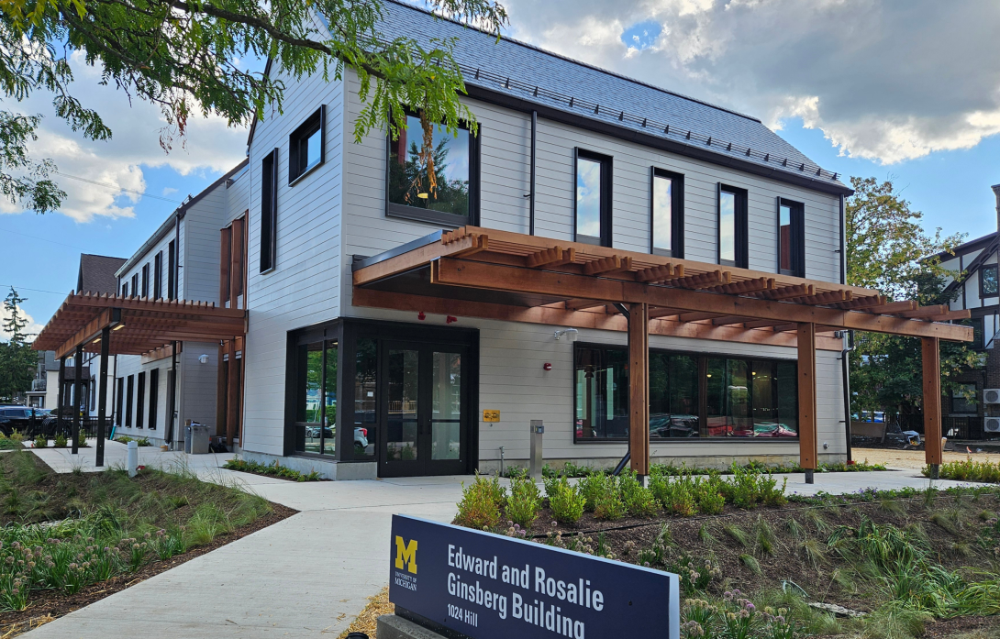

Additional Campus Partner Resources
Campus Partners
Cross-disciplinary partner organizations across the University of Michigan offer specialized instructional support and workshop sessions that you can incorporate into your curriculum.

Prepares undergraduate and graduate students for respectful, reciprocal community-engaged learning in civic and non-profit settings.
All first-year MSI and MHI students participate in a foundational Ginsberg workshop through SI 500.
Educational sessions on socially engaged design, sociotechnical thinking, human-centered approaches, and community ethics in technical applications.

Specialized instruction on source evaluation, special collections, literature strategies, poster presentations, data visualization, and citation management tools.